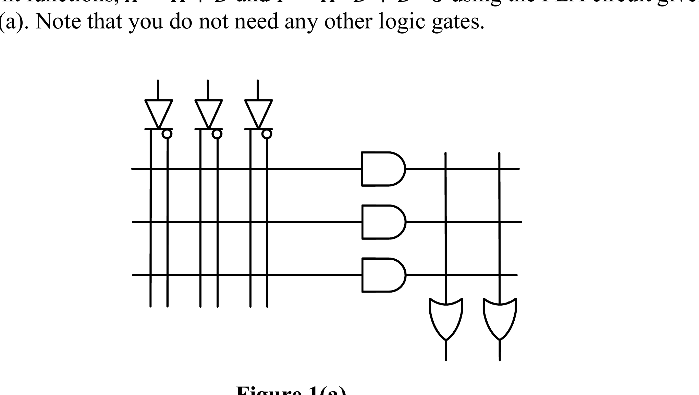

Week 6 — Combinational Modules: PLDs, Decoders, Encoders, Multiplexers
Lecture: "Programmable Logic Devices" + "Combinational Logic Modules" (slides 206–247) · Tutorial 6
This page interleaves each idea with the question that tests it — learn a small piece, then use it immediately. Prefer one long read top-to-bottom instead? → Classic layout
Why this topic exists
Weeks 1–5 taught you how to design a custom circuit for any Boolean function, one gate at a time. This week is about pre-built, general-purpose "building block" chips — you buy one part, and just wire (or "program") it to do a specific job, instead of designing transistors from scratch every time. Two families appear: programmable logic devices (PLA/PAL — generic, "configure me to be almost any function") and MSI modules (decoders, encoders, multiplexers — fixed function, but so useful they show up everywhere).
PLA and PAL: user-programmable AND-OR chips
Both are essentially a big AND-array feeding a big OR-array, exactly like the 2-level AND-OR (SOP) circuits from Week 4/5 — except the wiring between the arrays is done with fuses instead of physical gate placement, meaning you decide the function after manufacturing.
| PAL | Programmable Array Logic — the AND array is programmable (you choose which literals go into each product term), but the OR array is fixed (each output has a fixed, unchangeable number of product terms feeding it). |
|---|---|
| PLA | Programmable Logic Array — both the AND array and the OR array are programmable. This means a product term can be shared across multiple outputs (impossible in a PAL, since PAL's OR wiring is fixed) — a PLA can be more efficient when several outputs share common sub-terms. |
Programming a row: each product-term row crosses every input's true AND complemented line. Keeping a fuse intact on a particular literal's line means that literal is part of the AND term; blowing it removes that variable from the term entirely (rather than fixing it at a value). A row with every fuse blown except for A's true line and B's complement line implements exactly the term A·B̄.
The PLA minimisation goal is different from K-map minimisation: since the number of AND rows is physically fixed and shared across every output, the goal isn't "fewest literals per term" — it's fewest total distinct product terms across all outputs combined, actively looking for terms that can be reused by more than one output.
🔗 Practice: Tutorial 6 Q1 — now that you have the PLA/PAL concept
Both parts of Q1 use nothing but PLA/PAL programming logic — try each before opening the reveal.

(a) Implement X=A+B and Y=A·B̄+B̄·C using the given 3-row PLA (3 inputs, 3 programmable AND rows, 2 OR outputs).
Try it yourself first, then reveal the answer
Before touching fuses, always count: how many distinct product terms does the whole chip need to produce, across all outputs combined, and does that fit the number of physical AND rows? Here X needs the single-literal terms {A, B}; Y needs the two-literal terms {AB̄, B̄C} — four completely distinct terms, none shared between X and Y, but the figure provides only 3 AND rows. This is worth recognising as a genuine capacity check, the same way you'd check a PAL/PLA datasheet's row count before committing to a design in real life — sketch out your required term list first, always, before you start blowing fuses.
Derive the minimized SOP function of the given (already-fused) PLA circuit (Figure 1(b): inputs A,B,C,D through inverters, 3 AND rows, 1 OR output F).
Try it yourself first, then reveal the answer
Read each AND row's kept (unblown) fuses to get its product term, then OR the three rows together for F — this is the exact reverse of part (a): given the fuse pattern, recover the equation.
Answer: F = ĀBD̄ + AB̄D̄ + CD̄.
Decoders: 1 input code → exactly 1 active output line
An n-to-2n decoder takes an n-bit code and activates exactly one of 2n output lines — output i goes active precisely when the input equals the binary value i. Each output line is literally just one minterm of the inputs (Yi = mi), which is exactly why a decoder plus an OR gate is a complete, general-purpose SOP-function generator: pick out whichever minterms your function needs to be 1 for, and OR just those output lines together.
Real decoder chips (like the 74LS138) usually have active-low outputs (0 = selected, not 1) and multiple enable pins of different polarities (one active-HIGH like G1, others active-LOW like G2A/G2B) — a detail that turns out to be the key trick for building bigger decoders out of smaller ones (see Tutorial Q2 below): feeding the same raw signal into an active-high enable on one chip and an active-low enable on another splits the address space by that signal's value, with no inverter needed, as long as both polarities of enable are available somewhere in your parts.
Combining active-low decoder outputs into a plain OR function uses the DeMorgan trick from Week 4: Y = Y0̄+Y1̄+... is the same as NAND(Y0,Y1,...) — so a NAND gate (not an OR gate) is what you feed active-low decoder outputs into.
🔗 Practice: Tutorial 6 Q2 — now that you have the decoder concept
Q2 leans entirely on the enable-pin polarity trick just covered — try it before opening the reveal.
Design a BCD-to-Decimal decoder (4-bit input, 10 outputs, active-low enable Ḡ) using one 74LS138 (3-to-8) and one 74LS139 (dual 2-to-4) only.
Try it yourself first, then reveal the answer
Split by the input's MSB (call it A): digits 0–7 (A=0) map perfectly onto the 138's 8 outputs; digits 8–9 (A=1, and always B=0 for valid BCD) only need 2 of a 139's 4 outputs. The 138 handles the A=0 branch, gated by feeding A into one of its active-low enable pins (G2B=A → enabled exactly when A=0), with its own select inputs wired to the number's B,C,D bits.
The tricky part: the second decoder needs to activate when A=1, but a 74LS139 only has an active-low enable — it needs Ā, not A. Since a 74LS139 package contains two independent 2-to-4 decoders, use the spare half as a tiny "inverter": feed A into its A-select input, tie its B-select permanently to 0, and tie its own enable permanently on. Its Y2 output will then be active-low exactly when A=1 — a ready-made Ā signal, generated entirely from parts you already have, no extra inverter needed. Feed that into the real digit-8/9 decoder's enable pin, with C,D on its select inputs; its Y0,Y1 outputs are digits 8 and 9.
Encoders: the reverse operation
An encoder takes 2n input lines (only one "should" be active at a time) and outputs the n-bit code of whichever one is active. The plain version breaks if more than one input is active simultaneously (undefined result) — the fix is a priority encoder, which resolves conflicts by always reporting the code of whichever active input has been assigned the highest priority, ignoring lower-priority inputs even if they're also active.
🔗 Practice: Tutorial 6 Q5 — now that you have decoders and encoders
Q5 pairs a decoder with an encoder — the last piece it needs is the encoder concept just covered.
Design a 2-bit 2's complement converter using the given active-low 2-to-4 decoder and 4-to-2 (active-low input) encoder.
Try it yourself first, then reveal the answer
List what 2-bit 2's complement negation actually does to each value: 00→00, 01→11, 10→10, 11→01 (invert the bits and add 1, wrapping mod 4). The decoder turns the 2-bit input into "exactly one active-low wire tells you which of the 4 values you have"; the encoder turns "exactly one active-low wire" back into a 2-bit code. So the whole converter is just which decoder output wire you physically connect to which encoder input pin — the permutation is implemented purely by the wiring, no extra logic gates at all.
Answer: decoder select = the 2-bit input; wire decoder Y0→encoder A0 (0→0), Y1→encoder A3 (1→3), Y2→encoder A2 (2→2), Y3→encoder A1 (3→1). Encoder's output is the 2's complement result directly.
Multiplexers: many inputs, one selected output
A 2n-to-1 MUX uses n select lines to choose which one of 2n data inputs gets copied through to the single output. It's a "data selector" — a physical embodiment of "given an address, fetch that one value" (like an if/else-if/else chain implemented as hardware).
What it calculates: the single output Y of a 4-to-1 MUX as a sum of each data input ANDed with the minterm of the select lines that would choose it. When to use it: any time you know which data input should appear at which select-line combination and need the general Boolean expression for the MUX's output — the same term-by-term pattern extends to any 2n-to-1 MUX.
MUX as a universal function generator is the standout idea this week: any n-variable truth table can be implemented with a 2n-1-to-1 MUX by putting n−1 variables on the select lines and working out what each data input needs to be (0, 1, the remaining variable, or its complement) to match the truth table for that select combination. This needs half as many select variables as a full decoder-based implementation, at the cost of the data inputs sometimes needing to be a variable/complement rather than a fixed constant.
Demultiplexer (DMUX) is the mirror image of a MUX: 1 input routed to exactly 1 of 2n outputs, chosen by n select lines. A decoder with an enable input doubles as a DMUX for free — feed your data signal into the enable pin instead of a fixed "always on" signal, and whichever output would have activated now only activates when the data is also 1.
🔗 Practice: Tutorial 6 Q3 & Q4 — now that you have all four concepts
Q3 combines the MUX and decoder+NAND ideas on the same function, and Q4 reads a MUX-based circuit back into minterm/maxterm form. Try each before opening the reveal.
Implement Y=(A+BC̄)(B+ĀC) using (a) a 74153 4-to-1 MUX, (b) a 74LS138 with extra gates.
Try it yourself first, then reveal the answer
First simplify: expanding and reducing gives Y = Σm(2,6,7) = AB + BC̄ — much easier to place onto a MUX or decoder than the original bracketed form.
(a) MUX: put A,B on the select lines S1,S0, and work out each data input as a function of the remaining variable C: (A,B)=(0,0)→C0=0; (0,1)→C1=C̄; (1,0)→C2=0; (1,1)→C3=1.
(b) Decoder: use A,B,C on the 138's select inputs, then feed its (active-low) Y2, Y6, Y7 outputs into a single 3-input NAND gate — NAND(Y2,Y6,Y7) = Y2̄+Y6̄+Y7̄ = m2+m6+m7 = Y, by the same DeMorgan trick as the lecture's worked example.
Express F(a,b,c) in minterm and maxterm form, where a 74153 4-to-1 MUX has C0=a, C1=0, C2=1, C3=a, select lines S1=b, S0=c.
Try it yourself first, then reveal the answer
Work through all 4 (b,c) combinations and substitute the correct data input: (b,c)=(0,0)→F=C0=a; (0,1)→F=C1=0; (1,0)→F=C2=1; (1,1)→F=C3=a. Expand each against the free variable a to get all 8 rows of the truth table.
Answer: F(a,b,c) = Σm(2,4,6,7) = ΠM(0,1,3,5).
✍️ Write This Down
Copy these into your own notes:
- PAL = programmable AND array, fixed OR array. PLA = both arrays programmable, so product terms can be shared across outputs.
- PLA design goal: minimise the total number of distinct product terms across all outputs combined — not the literal-count of each term individually.
- A decoder's output Yi IS minterm mi — decoder + OR (or NAND, if active-low) gate = a general SOP function generator.
- Real decoder chips often have enable pins of different polarities (active-high AND active-low) — feeding the same raw signal into differently-polarised enables on two chips splits an address range by that signal, with no inverter needed.
- A 2n-to-1 MUX can implement any (n+1)-variable function: n variables go on the select lines, the data inputs become 0, 1, or the remaining variable (true or complemented).
- A decoder with an enable pin doubles as a demultiplexer for free — put the data signal on the enable pin.
- Priority encoders resolve the "more than one input active" problem by ignoring lower-priority active inputs.
- Decoder+encoder pairs can implement any fixed permutation/remapping of a code purely through wiring choices — no gates needed.
🟥 Redstone Build: A Redstone Decoder
A decoder is one of the most satisfying things to build in redstone because it's visibly "one code in, exactly one lamp out" — a perfect showcase piece.
Build: a 2-to-4 redstone decoder
- Set up 2 levers as your select inputs A,B, each feeding both a direct wire (true) and a torch-inverted wire (complement) — exactly like the PLA input structure from this week's slides.
- Build 4 AND gates (from Week 2), one per output: Y0=Ā·B̄, Y1=Ā·B, Y2=A·B̄, Y3=A·B. Each AND gate's two inputs are the correct combination of true/complemented A and B.
- Attach a redstone lamp to each of the 4 AND gate outputs. Flip the levers through all 4 combinations and confirm exactly one lamp is ever lit at a time — that's the defining behaviour of a decoder.
Extension — implement a function with your decoder
Pick any 2-variable function from Week 4/5 (e.g. XOR: f=Σm(1,2)), and instead of building it as its own gate network, wire your redstone decoder's Y1 and Y2 lamp-outputs into a shared OR line (Build 2 from Week 2). Flip the levers and confirm the shared line matches XOR's truth table exactly — a physical demonstration that "decoder + OR the right outputs" really can build any function, not just this one.